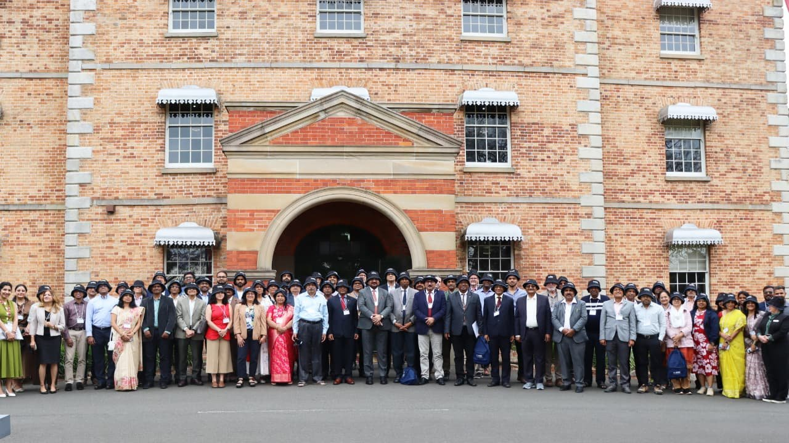
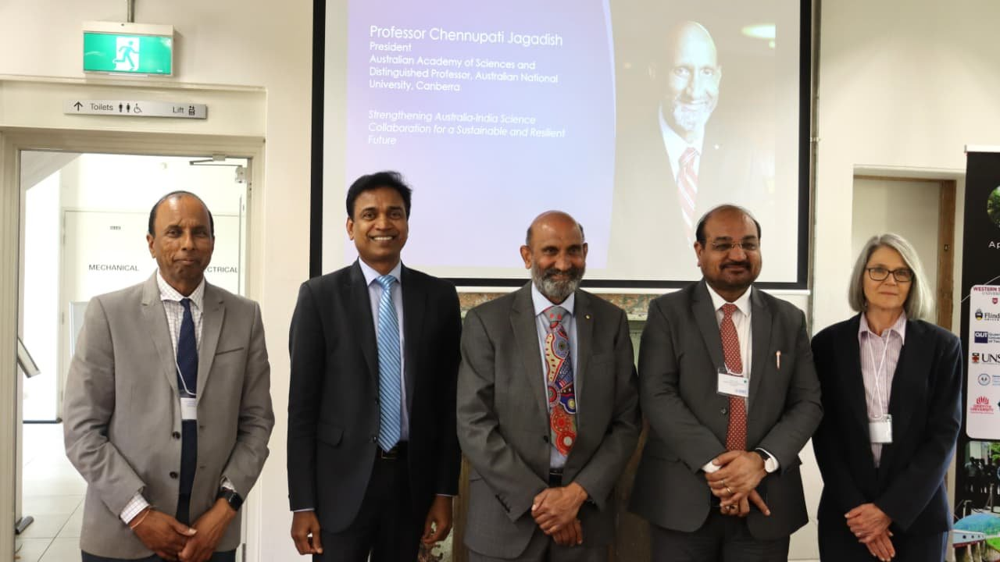
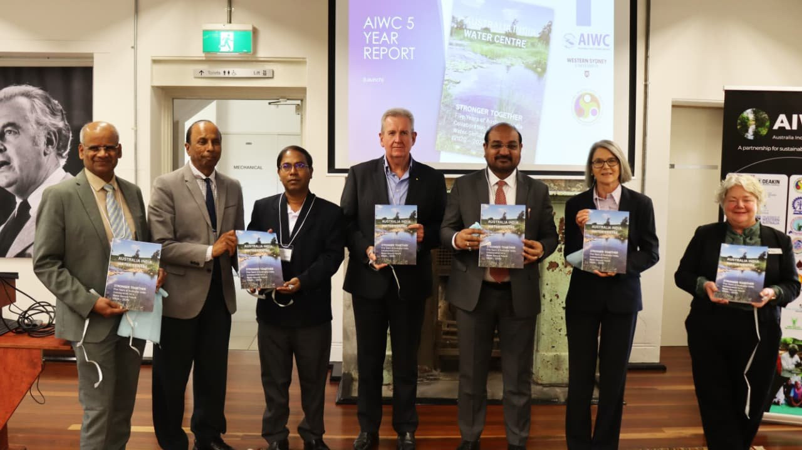
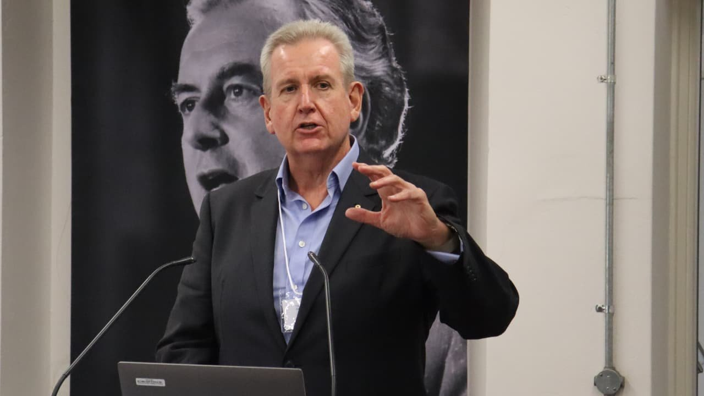
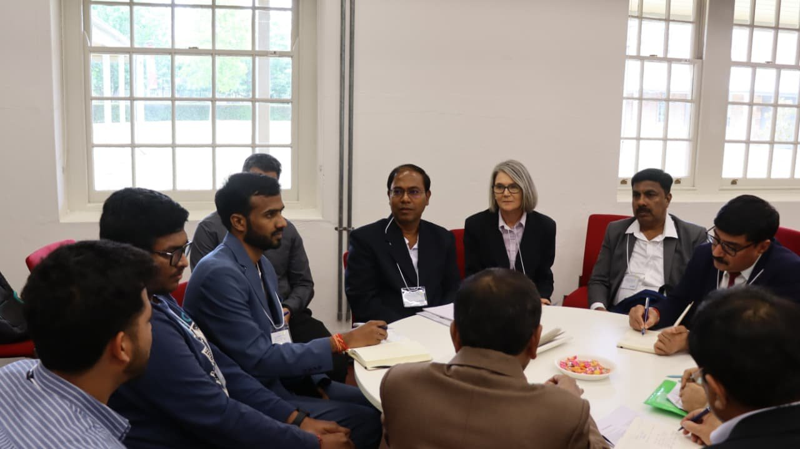
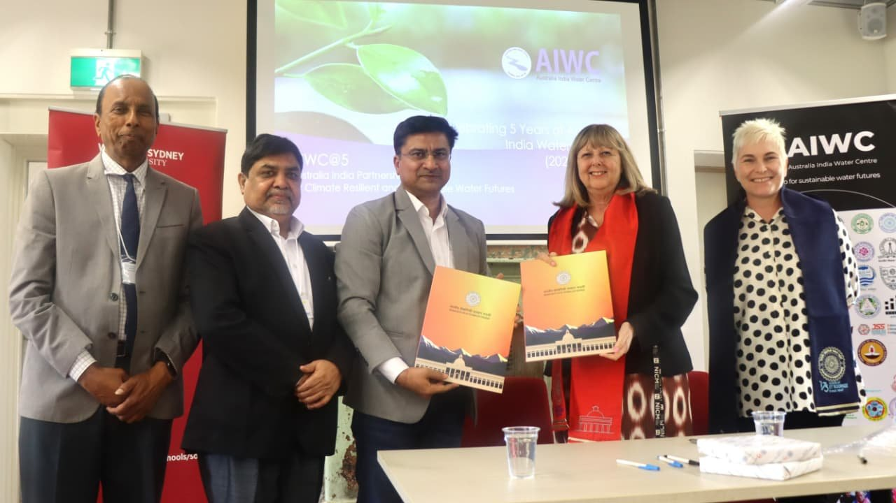
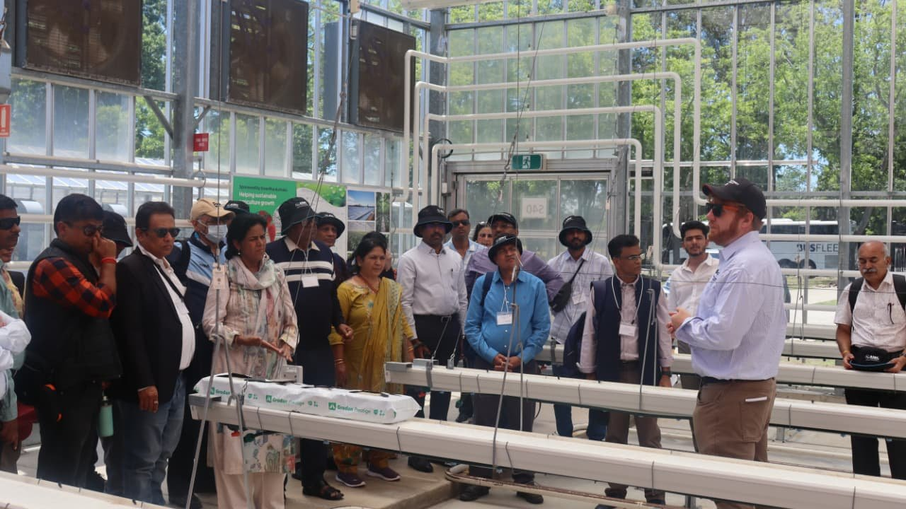
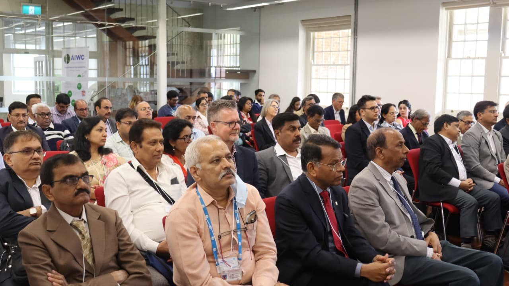

Centre page
AIWC@5 Conference
AIWC@5 Conference Celebrating Five Years of Australia–India Water Collaboration at Western Sydney University Western Sydney University hosted the AIWC@5 Partners Forum and International Symposium from 17–19 November at the Whitlam Institute, marking five years of the Australia…
Published 15 December 2025 · Updated 15 December 2025

AIWC@5 Conference







Celebrating Five Years of Australia–India Water Collaboration at Western Sydney University
Western Sydney University hosted the AIWC@5 Partners Forum and International Symposium from 17–19 November at the Whitlam Institute, marking five years of the Australia India Water Centre (AIWC) and its growing impact on water security, sustainable agriculture, and climate resilience.
The three-day event brought together about 80 delegates from India and Australia, including leaders from the Indian Council of Agricultural Research (ICAR), National Bank for Agriculture and Rural Development (NABARD), IITs, NITs, State Agricultural Universities, Australian government partners, and several leading universities.
Led by Distinguished Professor Basant Maheshwari, the AWIC@5 and the International Symposium featured speaker from an exceptional group of leaders, including:
- The Honourable Barry O’Farrell, Former Premier of NSW and former Australian High Commissioner to India
- Dr M. L. Jat, Director General, Indian Council for Agricultural Research (ICAR)
- Professor Chennupati Jagadish AC, President, Australian Academy of Science
- His Excellency Philip Green, Australian High Commissioner to India
- Dr Janakiraman Sarvesvaran, Consul General of India, Sydney
- Professor Graciela Metternicht, Dean, School of Science, WSU
- Dr Peter Dillon, Formerly CSIRO Land & Water Division, Adelaide
- Professor Ashok Sharma, Victoria University
- Professor Meenakshi Arora, University of Melbourne
- Professor Ramesh Sharda, Oklahoma State University
A significant highlight of the event was the launch of the AIWC Five-Year Report, which captures the initiative’s collective journey, achievements, and impact across both nations, including the ongoing MARVI program led by WSU and funded by the Australian Government, which has influenced groundwater management practices across more than 10,000 villages in India.
As part of the event, Professor Deborah Sweeney, Provost, and Professor Nicolene Murdoch, PVC Global Partnerships and Transnational Education, formally signed an MOU with IIT Roorkee to establish a Dual Degree Program and strengthen academic exchange between the institutions.
AIWC’s Strategic Directions for the Next Five Years
Five thematic breakout sessions provided a structured process for partners to shape the AIWC 2030 agenda. Key outcomes included:
- Research & Innovation: Partners prioritised collaborative work on climate-resilient agriculture, groundwater security, PFAS and water quality, and digital water tools such as dashboards and IoT-enabled monitoring systems.
- Training, Education & Engagement: Delegates recommended expanding joint degree programs, expanding the Young Water Professionals (YWP) model, developing micro-credentials, and building shared training modules across IITs, ICAR institutes, Australian universities, and State Agricultural Universities.
- Policy and Government Partnerships: Participants identified practical pathways for strengthening engagement with agencies such as ICAR, NABARD, National Water Academy, PHED Rajasthan, DoLR, and Australian state water agencies. They emphasised co-producing policy briefs, supporting existing government missions, and positioning AIWC as a reliable technical partner.
- Global Positioning and Communications: The group recommended building AIWC’s identity as a trusted one-stop platform for Australia–India water collaboration, with stronger global visibility, curated success stories, and targeted engagement with media, diplomatic missions, and international networks. Also, one of the clear recommendations that came from the group work was that Australian and Indian partners ot use the AIWC platform to collaborate with countries (e.g., Indonesia and Vietnam) in the region.
- Funding, Structure & Sustainability: Partners highlighted the need for a more stable financial model, combining government-aligned projects, donor partnerships, industry collaboration, and revenue-generating training programs. They also endorsed clearer governance arrangements and the establishment of thematic clusters.
Collectively, these sessions generated a coherent set of actions that will guide the development of an AIWC 2030 Vision and Implementation Plan over the coming months.
Subscribe our YouTube Channel